Patch-wise timesteps
enable heterogeneous denoising.
CVPR 2026
CompVis @ LMU Munich · Munich Center for Machine Learning (MCML)
Patch Forcing turns denoising into a spatially adaptive process. We introduce patch-wise diffusion timesteps during training, where different image patches have different noise scales. Although conceptually simple, the approach is not trivial: naive uniform timestep sampling deteriorates performance. Thus, we require a dedicated timestep sampler to regulate the amount of clean information exposed during training, mitigating the train-test gap where inference operates purely from noise without access to clean signals. Building on this, we introduce adaptive sampling strategies, where easy regions are denoised faster and provide cleaner context for harder ones, improving generation quality.
enable heterogeneous denoising.
reduces the train-test gap.
allocates compute dynamically.
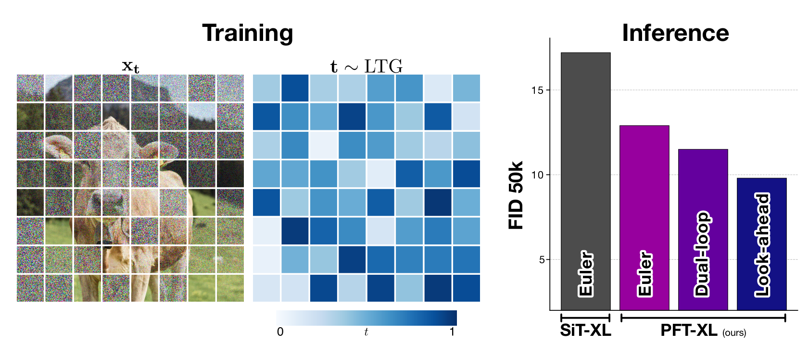
Most diffusion and flow-based image generators allocate compute uniformly across space, using a single global timestep for all image regions. While convenient, this assumes that all regions are equally difficult to denoise. In practice, images are highly heterogeneous. Large, low-frequency regions such as backgrounds are easy to denoise, whereas thin structures, object boundaries, or text remain ambiguous until late in the denoising process. Treating all regions the same therefore wastes compute on easy areas while under-refining regions that would benefit from either more steps or additional context.
This suggests a simple question: can the denoising process itself adapt to the spatial structure of the image? Concretely, can we let different regions follow different noise trajectories, so that easy regions move ahead and provide cleaner context for harder regions?
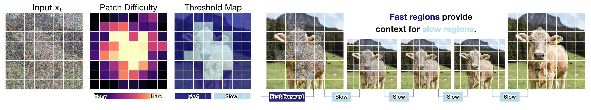
Patch Forcing consists of two parts. First, we train the model with heterogeneous patch-wise timesteps, but use a dedicated timestep sampler to avoid overly informative training states. Second, we equip the model with a lightweight patch-difficulty head, which enables adaptive samplers that let easy regions move ahead and guide harder ones.
A natural starting point is to apply Diffusion Forcing (Chen et al., 2024) at the patch level and sample timesteps independently per patch. While this works well for sequential data such as videos, it leads to overly informative training states in images: most samples contain at least some nearly clean patches, introducing a mismatch to inference, which starts from pure noise. For example, using flow-matching settings, independently sampling each patch timesteps uniformly in [0,1] concentrates the mean sample noise level across patches around intermediate values. This sharply contrasts with inference, which starts from a mean near 0 (pure noise) and gradually progresses toward 1 (clean signal).
Prior work (SRM, Wewer et al., 2025) addresses this issue by controlling the average information per sample. This is well-suited for spatial reasoning tasks such as Sudoku, where partial solutions naturally provide valid context. In image generation, however, inference starts from pure noise, and such clean context is not available. As a result, controlling only the mean still leaves a mismatch, since the most informative patch often remains close to fully denoised.
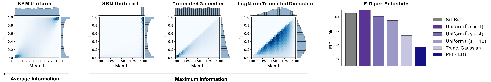
To resolve this mismatch, we directly control the maximum information per sample. Concretely, we sample a maximum timestep from a shifted Logit-Normal distribution (Esser et al., 2024) and then draw all patch timesteps from the lower half of a truncated Gaussian centered at this value (Fig. 4). This Logit-Normal Truncated Gaussian (LTG) sampler prevents overly clean patches, while maintaining a broad coverage of noise levels across patches.
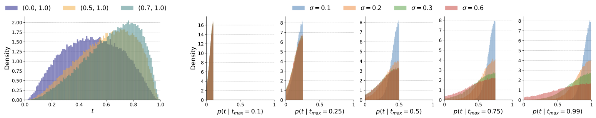
Patch Forcing requires only minimal changes to a standard SiT/DiT-style architecture (Peebles & Xie, 2023; Ma et al., 2024). In existing models, conditioning signals such as the timestep are embedded once and injected via adaptive LayerNorm (AdaLN), effectively broadcasting the same conditioning across all tokens. We instead replace this global conditioning with patch-wise conditioning by providing one timestep embedding per token/patch. The class embedding is similarly repeated across patches, and the AdaLN modulation is applied token-wise, allowing each patch to follow its own denoising trajectory.
We additionally add one output channel for predicted patch difficulty, parameterized as a log-variance. The model therefore predicts both the denoising velocity and a spatial uncertainty map, while leaving the transformer backbone unchanged.
@@ -10,6 +10,7 @@
import torch
import torch.nn as nn
+from einops import repeat
def modulate(x, shift, scale):
- return x * (1 + scale.unsqueeze(1)) + shift.unsqueeze(1)
+ return x * (1 + scale) + shift
@@ -113,9 +111,9 @@ class SiTBlock(nn.Module):
- shift_msa, scale_msa, gate_msa, shift_mlp, scale_mlp, gate_mlp = self.adaLN_modulation(c).chunk(6, dim=1)
- x = x + gate_msa.unsqueeze(1) * self.attn(modulate(self.norm1(x), shift_msa, scale_msa))
- x = x + gate_mlp.unsqueeze(1) * self.mlp(modulate(self.norm2(x), shift_mlp, scale_mlp))
+ shift_msa, scale_msa, gate_msa, shift_mlp, scale_mlp, gate_mlp = self.adaLN_modulation(c).chunk(6, dim=-1)
+ x = x + gate_msa * self.attn(modulate(self.norm1(x), shift_msa, scale_msa))
+ x = x + gate_mlp * self.mlp(modulate(self.norm2(x), shift_mlp, scale_mlp))
@@ -227,14 +225,22 @@ class SiT(nn.Module):
- def forward(self, x, t, y):
+ def forward(self, x, t, y, return_uncertainty: bool = True):
x = self.x_embedder(x) + self.pos_embed
- t = self.t_embedder(t) # (N, D)
- y = self.y_embedder(y, self.training) # (N, D)
+ t = t[..., None] # (b, n) -> (b, n, 1)
+ t = self.t_embedder(t).squeeze(1) # (b, n, d)
+
+ y = self.y_embedder(y, self.training) # (b, d)
+ y = repeat(y, 'b d -> b n d', n=x.shape[1])
c = t + y
for block in self.blocks:
x = block(x, c)
x = self.final_layer(x, c)
x = self.unpatchify(x)
- return x
+ logvar_theta = x[:, -1:, :, :]
+ x = x[:, :-1, :, :]
+ return x, logvar_thetaTo enable adaptive sampling, the model must estimate which regions are easy or difficult to denoise. We follow uncertainty-prediction ideas from prior diffusion literature (Nichol and Dhariwal, 2021; Wewer et al., 2025) and augment the model with a lightweight per-patch uncertainty head.
Concretely, the model predicts (i) a mean (velocity) for denoising and (ii) a per-patch log-variance. Both are trained jointly using a Gaussian negative log-likelihood objective:
Ltotal = E[ ||vGT - vθ||2 - λ log N(vGT | sg(vθ), σθ2I) ].
Intuitively, this objective introduces two coupled roles: the model fits the mean prediction while also calibrating its confidence. Regions with large prediction errors are encouraged to produce higher variance, whereas easy regions are pushed toward low uncertainty.
Figure 5 illustrates this behavior on a simple 2D example. The model assigns low uncertainty to confident trajectories and higher uncertainty to ambiguous ones, effectively capturing local prediction difficulty. We use this predicted variance as a proxy for patch-wise denoising difficulty during adaptive sampling.
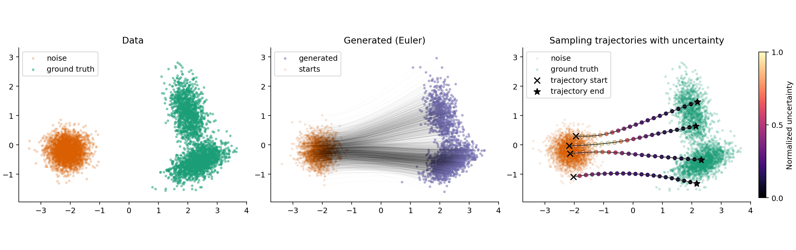
Combining patch-wise timesteps with per-patch difficulty prediction enables adaptive sampling. Instead of following a single global schedule, the model can allocate compute spatially based on predicted uncertainty.
The core intuition is simple: let easy regions move ahead and use them as context for harder ones. This allows the model to focus computation where it is most needed, while avoiding unnecessary updates in regions that are already resolved.
We base our sampling strategies on three key empirical findings:
Advancing confident patches provides cleaner context, improving predictions in more challenging regions.
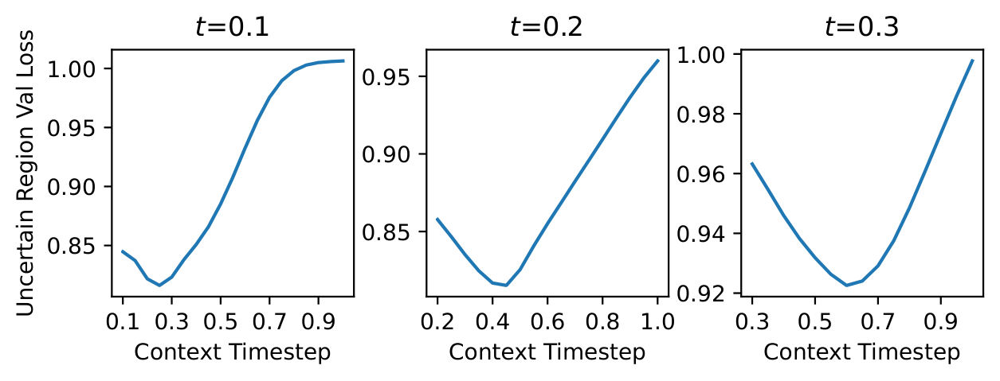
Predicted uncertainty correlates with reconstruction error and identifies regions that require more refinement.
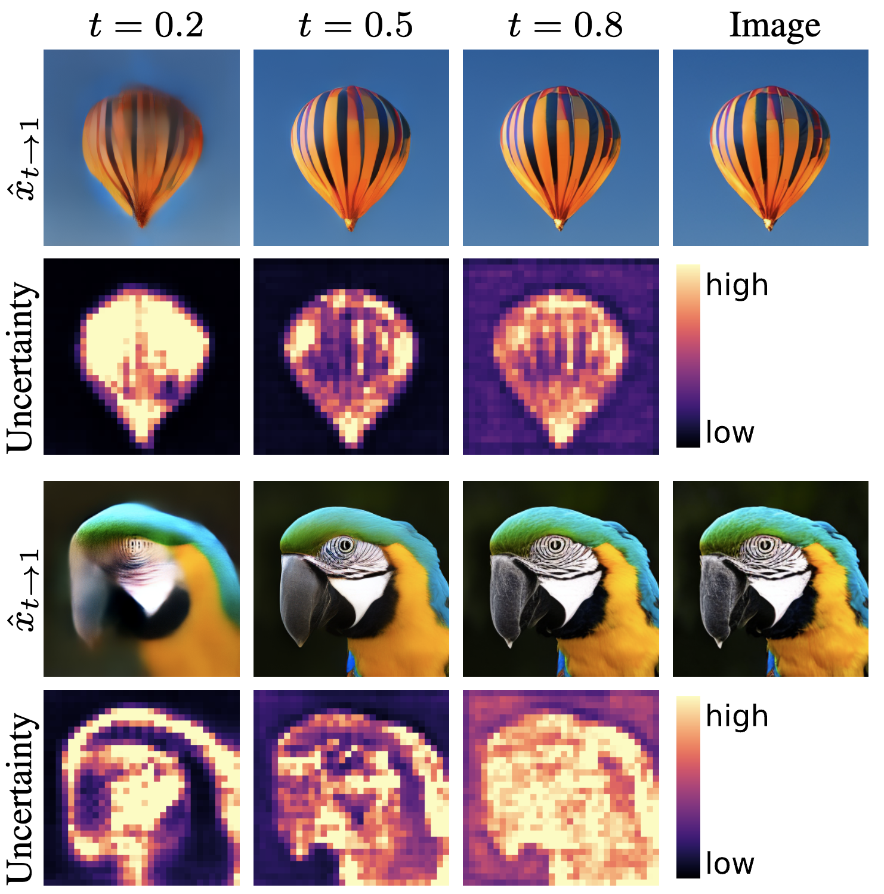
Providing additional context lowers uncertainty in ambiguous regions, making them easier to resolve.
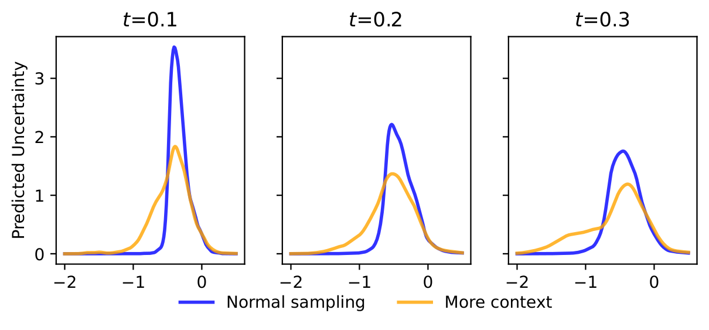
Based on these findings, we design adaptive sampling strategies that dynamically advance confident regions and allocate more refinement steps to uncertain ones.
Alternates between advancing confident patches with larger steps and refining uncertain patches with smaller steps.
Propagates confident patches to future timesteps and uses them as context for denoising uncertain regions.
On ImageNet-256, training with heterogeneous patch-wise timesteps already improves generation quality under fully matched architectures, training, and compute. Even with standard parallel Euler sampling at inference, Patch Forcing outperforms the SiT baseline, indicating that heterogeneous timesteps contribute significantly to the observed gains. Figure 6 further shows that randomly selecting patches for updates performs worse than simple parallel sampling, while uncertainty-guided schedules consistently improve performance. This suggests that the predicted log-variance provides a meaningful signal for patch difficulty.
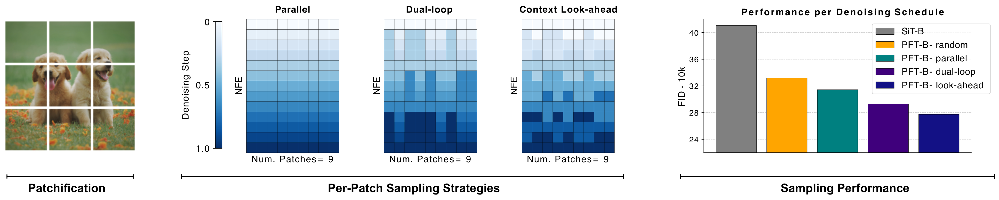
These improvements persist across model scales, from B/2 to XL/2, suggesting that the benefits of heterogeneous timesteps generalize beyond a specific model capacity.
| Model Size | Params | SiT | PFT - Euler | PFT - Dual-loop | PFT - Look-ahead |
|---|---|---|---|---|---|
| B/2 | 130M | 33.0 | 27.9 (-15.5%) | 26.0 (-21.2%) | 24.2 (-26.7%) |
| L/2 | 458M | 18.8 | 14.7 (-21.8%) | 13.9 (-26.1%) | 13.0 (-30.9%) |
| XL/2 | 675M | 17.2 | 12.9 (-25.0%) | 11.5 (-33.1%) | 9.8 (-43.0%) |
Patch Forcing also scales to text-conditioned generation and remains competitive on T2I-CompBench++ and GenEval.
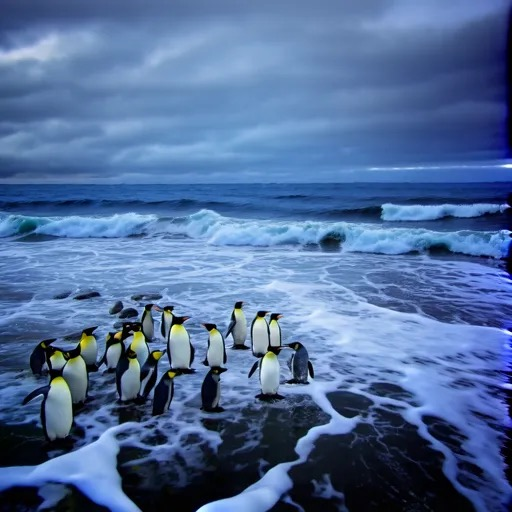
We further find improved text rendering capabilities when training with heterogeneous patch-wise timesteps under matched training and inference settings compared to standard Flow Matching models. This aligns with concurrent observations in Self-Flow (Chefer et al., 2026), which also leverage heterogeneous timesteps. While Self-Flow mitigates the train-test gap using dual-timestep training together with an additional representation learning objective, our results suggest that improved text rendering already arises from heterogeneous timesteps alone, potentially reducing the need for additional forward passes. However, what exactly drives this improvement remains an open question, interesting for future work. 😉
Flow Matching
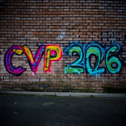
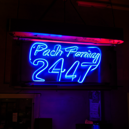
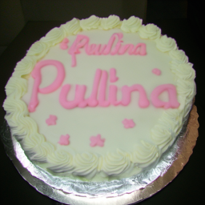
Patch Forcing
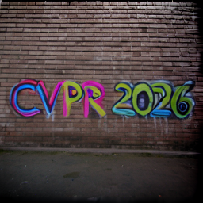
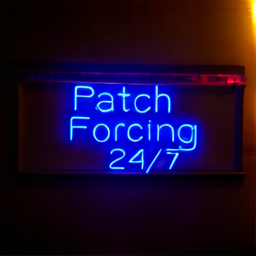
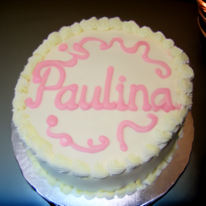
Graffiti on a brick wall spelling "CVPR 2026" in colorful font.
A neon sign over a bar that reads "Patch-Forcing 24/7" with blue font.
A birthday cake with icing that spells "Paulina" in pink font.
If you find this research interesting and useful for your own work, we are happy if you cite us.
@InProceedings{schusterbauer2026patchforcing,
title={Denoising, Fast and Slow: Difficulty-Aware Adaptive Sampling for Image Generation},
author={Johannes Schusterbauer and Ming Gui and Yusong Li and Pingchuan Ma and Felix Krause and Björn Ommer},
booktitle={Proceedings of the IEEE/CVF Conference on Computer Vision and Pattern Recognition},
year={2026}
}